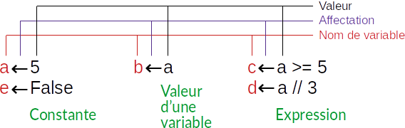
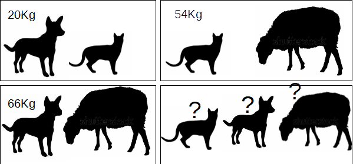

En s'inspirant de l'Algorithme suivant, écris ta fiche de renseignements. Les élèves âgés
de 18 ans et plus sont considérés comme majeurs.
Algorithme renseignements
Début
Ecrire("Nom & Prénom : Ahmed BEN HASSINE")
Ecrire("Âge : 17 ans")
Ecrire("Moyenne Info : 16.5")
Ecrire("Majeur : Non")
Fin
Quel est le rôle de la fonction Ecrire ?
Traduire cet algorithme en Python ?
Fiche de renseignements - Version 2
En comparant les programmes des élèves nous remarquons que nous avons écrit des programmes différents pour
faire la même chose.
On pourra améliorer cet algorithme en utilisant des variables. L'algorithme précédent devient alors :
Algorithme renseignements
Début
np ← "Ahmed BEN HASSINE"
age ← 17
moy ← 16.5
majeur ← age ≥ 18
Ecrire("Nom & Prénom :", np)
Ecrire("Âge :", age, "ans")
Ecrire("Moyenne Info :", moy)
Ecrire("Majeur :", majeur)
Fin
Modifier ce nouveau programme. Remplacer les données existantes par vos informations.
Combien de parties y a-t'il dans le programme ?
Quel est l'apport de l'ajout des variables ?
Traduire l'algorithme en Python ?
Lotterie d'Italie
Soit le programme suivant qui affiche le nombre gagnant dans la lotteria d'Italia :
Faire de sorte que l'affichage du programme soit sur une seule ligne, comme suit :
Nombre gagnant : 47-49-69-32-40-27
Résumé
Affichage
La sortie, ou l'affichage, se fait par défaut sur le périphérique de sortie standard : L'écran
.
L'opération de sortie se fait en algorithme à l'aide de la procédure Écrire(...).
Exemples :
// Affichage d'un message
Ecrire("Votre message")
x ← 4
y ← 7
// Affichage de la valeur d'une variable
Ecrire(x)
// Affichage mixte
Ecrire(x, y)
Ecrire("x = ", x)
En Python, elle se fait à l'aide de la fonction print(...). Cette fonction offre plusieurs
possibilités d'affichage :
Affichage d'un message : Le message doit être entre guillemets doubles
"message" ou entre guillemets simples 'message'. Exemple :
print("Votre message")
print('Votre message')
Affichage de la valeur d'une variable : Sans guillemets Python affiche la valeur de la
variable portant ce nom. Exemple :
print(x)
Affichage mixte : On peut combiner l'affichage de messages et de variables dans une
instruction print(…). Exemple :
# Affichage mixte sur une seule ligne
print("x =", x)
# Affichage de variables séparées par des espaces
x, y, z = 4, 7, 9
print(x, y, z)
# Affichage de variables séparées par le symbole ":"
print(x, y, z, sep=":")
# Affichage de variables sur une seule ligne séparés par le symbole " - "
print(x, end=" - ")
print(y, end=" - ")
print(z, end=" - ")
Affectation
L'affectation permet de donner une valeur à une variable.
En algorithme, on utilise le signe d'affectation ← comme suit : variable ← valeur
En Python, l'affectation se fait à l'aide de l'opérateur = comme suit : variable = valeur
La valeur affectée à une variable peut-être :
une constante
la valeur d'une autre variable
le résultat d'une expression

Les types d'affectations
Une variable possède :
Un nom : qui doit commencer obligatoirement par une lettre alphabétique et ne
doit pas contenir ni des espaces, ni des symboles.
Un type : qui dépend de la valeur qu'on peut stocker dans la variable.
Ecrire l'algorithme d'un programme qui déclare trois variables : chats, chiens et
vaches, puis affiche le message suivant : Nous avons soigné 7 animaux : 4 chat(s), 2 chien(s) et 1 vache(s).
Nous avons soigné 7 animaux : 4 chat(s), 2 chien(s) et 1 vache(s).
Le porte monnaie
Le porte monnaie de grand-mère
Le porte monnaie de grand-mère contient les pièces de monnaie suivantes :
5 pièces de 50 millimes
2 pièces de 100 millimes
4 pièces de 200 millimes
3 pièces de 500 millimes
4 pièces de 2 DT
Ecrire l'algorithme d'un programme qui déclare cinq variables contenant le nombre de pièces de chaque type,
puis calcule et
affiche le montant total.
Il y'a 10750 millimes dans le porte monnaie de grand-mère.
La masse des animaux

La masse des animaux
Dans notre ferme il y a un chat, un chien et un mouton.
La masse du chat et du mouton est 54 kg.
La masse du chat et du chien est 20 kg.
La masse du chien et du mouton est 66 kg.
Ecrire l'algorithme d'un programme qui calcule la masse totale des trois animaux, puis détermine et affiche
la masse de
chaque animal.
La masse total est 70.0 Kg
Chat = 4.0
Chien = 16.0
Mouton = 50.0
Mon âge
Mon âge
Aujourd'hui mon age est le double de celui de ma soeur. Après trois ans, mon âge sera 1.5 fois l'âge de ma
soeur.
Déterminer mon age et celui de ma soeur.
Ecrire l'algorithme d'un programme qui affiche mon âge est celui de ma soeur, aujourd'hui et après 3 ans.
Aujourd'hui
J'ai 6.0 ans
Ma soeur a 3.0 ans
Dans 3 ans
J'aurai 9.0 ans
Ma soeur ara 6.0 ans